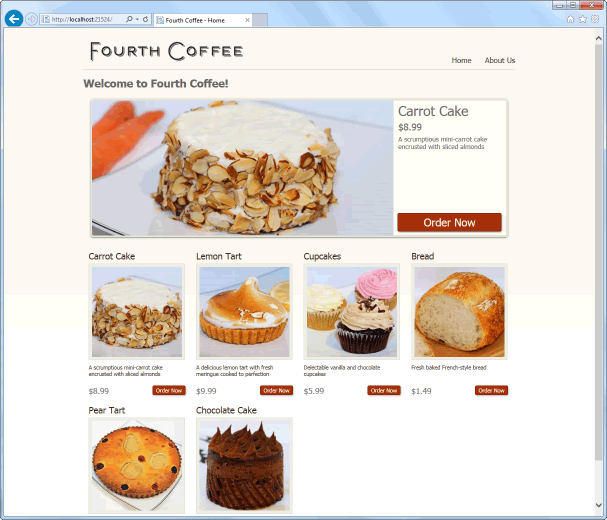
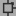
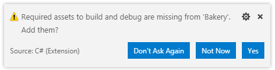
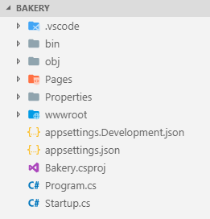
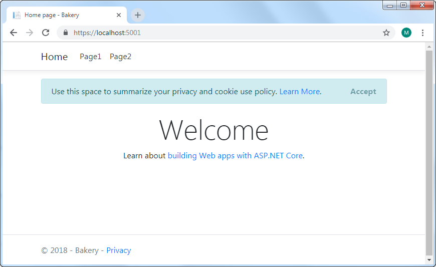

讲解
Razor Pages 实例 - 面包店
本实例会一步一步的演示如何从头开始创建 Razor Pages 应用程序，以及如何添加通用功能，包括与数据库通信，使用表单和发送电子邮件。
Fourth Coffee 网站以ASP.NET Web Pages 面包店模板网站开始。 模板站点提供了“最先进的”在线订购系统，使用户能够订购各种烘焙食品。 从技术角度来看，该网站展示了
- 使用基于文件的数据库来存储产品信息
- 基本数据访问
- 创建和处理表单
- 和通过 WebMail 助手功能发送电子邮件。

在本系列中，从网页移植到 Razor Pages 。分为7个步骤，每个步骤都代表了 Razor Pages 开发的一个方面。此后，将使用其他功能增强站点，将其作为一个平台来说明 Razor Pages 应用程序中的许多其他 ASP.NET Core 功能。
步骤如下：
该网站将用 Visual Studio Code 构建 - Visual Studio Code 是 Microsoft 在开发人员社区的帮助下开发的开源代码编辑器。 数据将存储在 SQLite 数据库中。 选择这两个工具都具有跨平台且相对易于使用的优点，这有助于使该系列实例在任何平台上对所有有能力的开发人员都可使用。
该站点使用 ASP.NET Core 2.2 和 Entity Framework Core 构建。
获取开发工具
开始，您需要获取这些开发工具。 首先，您可以在此处获得 .NET Core 。 您可以下载构建 .NET Core 应用程序所需的SDK（软件开发工具包）。 其次 - runtime - 是要在要运行 ASP.NET Core 应用程序的服务器上安装的选项。 SDK 包含运行时。
接下来，您需要下载并安装 Visual Studio Code 。然后安装 C# 扩展，这是 C# 开发所需要的。 您可以通过单击左侧图像上的扩展图标并在窗格顶部显示的搜索框中键入“C#”来找到它。 您还应该安装 C# 扩展，该扩展提供了用于添加 C# 类和接口文件的模板。
最后，我使用 Material Icon Theme 扩展，该扩展在“资源管理器”窗格中提供了文件和文件夹的图标。
创建一个空白的 Web 应用程序
您需要创建一个文件夹来容纳您的应用程序文件。 您可以按照自己喜欢的任何方式进行操作。 您可以手动创建文件夹，然后在VS Code中打开它，也可以打开VS Code并使用其 集成的终端通过标准 mkdir 命令创建目录。 通过按 Ctrl+' （在Mac上为 ⌘+'）访问 VS Code 中的终端。 无论如何，该文件夹应命名为 Bakery。
创建文件夹后，在 VS Code 中将其打开。 然后，确保终端的活动位置在 Bakery 文件夹中，使用以下命令创建一个新的 Razor Pages 应用程序：
dotnet new webapp 请注意，命令 dotnet new razor 也将导致创建Razor Pages项目。
该项目的名称来自创建该文件夹的文件夹。理想情况下，您希望它是带有大写字母“ B”的“Bakery”。 这样，如果您要将该系列中的代码复制并粘贴到您创建的项目中，则可以通过混合项目名称空间的大小写来最大程度地减少错误蔓延的可能性。 如果您在创建了 Bakery 文件夹后使用终端导航到 Bakery 文件夹并使用所有小写字母（例如cd c:\bakery），则生成的项目及其默认名称空间将使用小写的“ b”。
创建应用程序后，将自动执行 dotnet restore 命令。 这将导致恢复项目所需的依赖关系和工具。 如果这是您的第一个 .NET Core 应用程序，则此命令可能需要一些时间才能完成。 完成后，您可以从 VS Code 中打开 Bakery 文件夹，以查看创建的文件和文件夹。
此时，可能会提示您添加构建和调试项目所需的缺少项目：

点击 是。
文件和文件夹
在继续之前，我们将检查模板生成的文件和文件夹：

-
在上一步中单击“是”时，将生成 .vscode 文件夹。 它包含提供调试配置的文件。
-
bin 文件夹包含 Build 操作的输出 - 应用程序的已编译二进制文件。目前没有文件 - 只是一个名为 Debug 的文件夹，其中包含另一个名为 netcoreapp2.2 的文件夹。该应用程序尚未编译（构建）。那将很快发生。
-
obj 文件夹包含各种文件。 除了可能完全删除其内容之外，几乎不需要访问该文件夹。 框架将其用作存储临时文件和构建过程中使用的其他对象的地方。
-
Properties 文件夹包含一个名为 lanchSettings.json 的文件。 这是用于在浏览器中启动应用程序的配置文件。
-
应用程序的根目录由5个文件组成。 有两个名为 appsettings 的 JSON 文件。 这些包含应用程序配置信息。 它们等效于 ASP.NET 早期版本的 web.Config 文件中的
appSettings部分。 名称为 Development 的版本仅在应用程序在开发模式下运行时使用。 -
.csproj 文件是基于 MS Build XML 的标准项目文件。 它包含项目设置和对项目使用的文件的引用。 MS Build使用此文件来配置应用程序的实际生成过程。
-
所有 ASP.NET Core 应用程序实际上都是控制台应用程序。 任何控制台应用程序的默认入口点是 Program.cs 文件中找到的
Program类中的Main方法。 在这种情况下，Main方法负责为应用程序配置 Web 主机并启动它，以使其准备好处理请求。 -
Startup.cs 文件包含一个名为
Startup的类。 此类具有两个主要方法 -ConfigureServices和Configure。 这些用于配置应用程序的请求处理管道（应用程序所需的可选组件）及其依赖的服务。 -
wwwroot 文件夹包含静态文件-图像，JavaScript 文件，CSS 文件等。
-
最后，是 Pages 文件夹。 这是 Razor Pages 的默认位置。 模板站点包括三个：Error, Index 和 Privacy。 您将很快添加到此。
生成并运行应用程序
在命令提示符下，键入以下内容：
dotnet run您将得到以下信息确认：
Now listening on: https://localhost:5001 Now listening on: http://localhost:5000 Application started. Press Ctrl+C to shut down.打开浏览器并导航到该网站 https://localhost:5001。 如下所示：

自版本2.1起，页面顶部的 cookie 允许横幅成为 ASP.NET Core 模板的一部分。 旨在帮助网站所有者遵守欧盟于2018年5月引入的 GDPR 法规。它还有助于遵守 Google 的隐私建议。由您决定在模板的“隐私”页面中提供相关内容。 您可以通过单击“接受”来删除横幅，也可以通过删除或注释掉 Pages/Shared 文件夹中 _Layout.cshtml 文件中的 <partial name="_CookieConsentPartial" /> 来删除横幅。
导航到Page1和Page2当前无用。下一节将解决该问题。
小结
至此，您已经使用 .NET Core SDK 和 Visual Studio Code 创建了一个新的 Razor Pages 应用程序。 您已经查看了项目文件夹的内容，并已在浏览器中启动了该应用程序。 在下一部分中，您将添加一个新页面并开始自定义网站内容。
下一步: 添加新页面